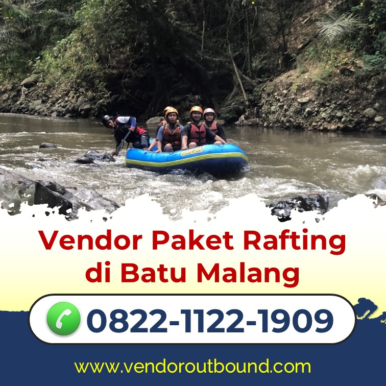
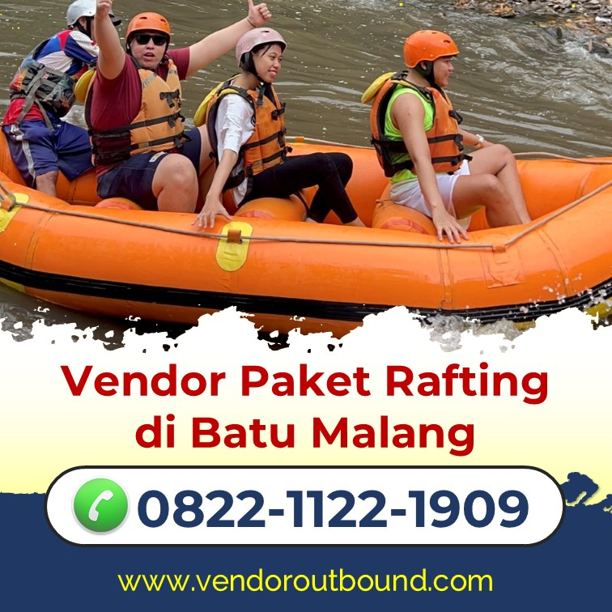
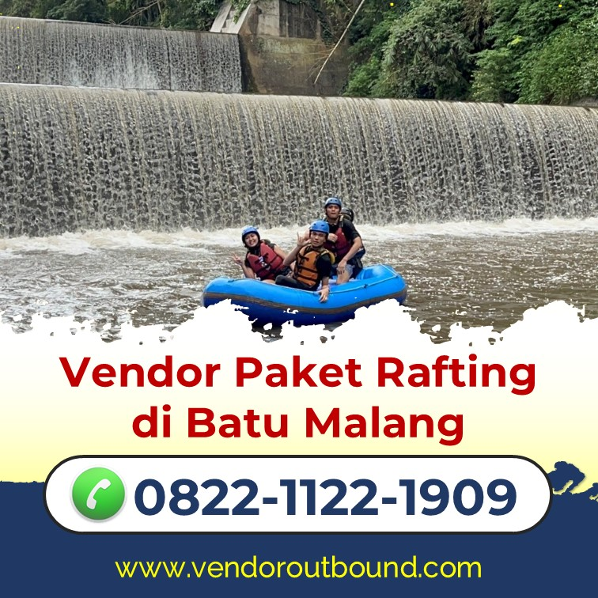
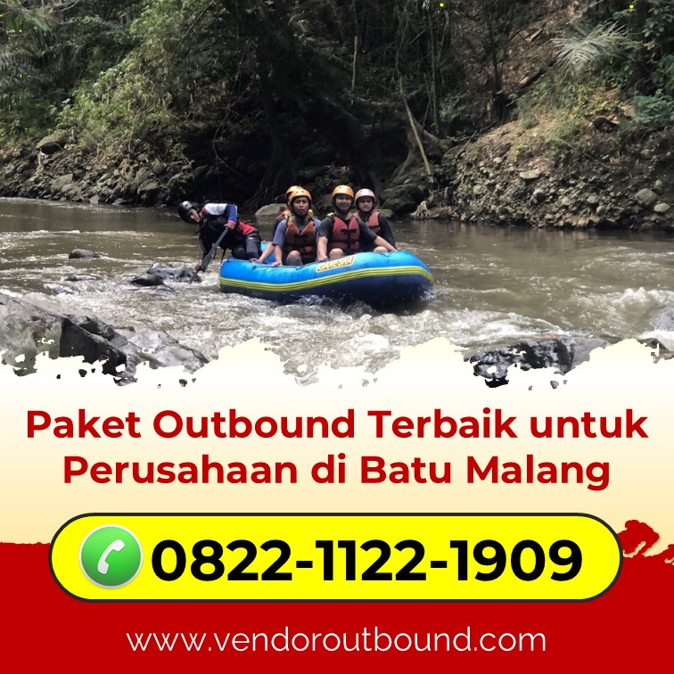
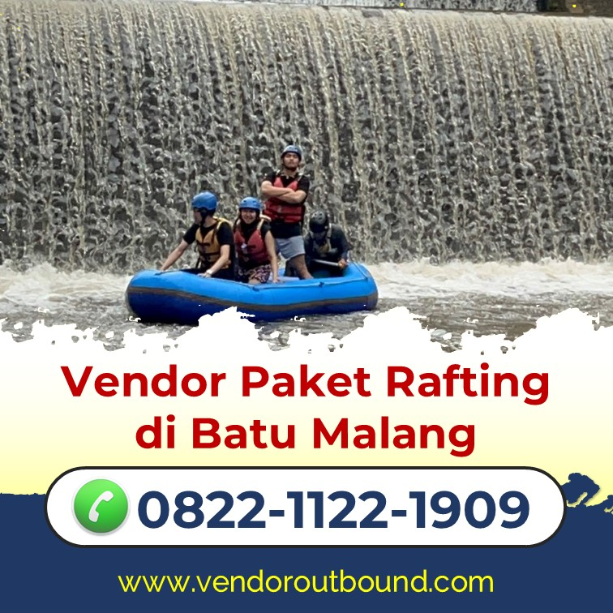
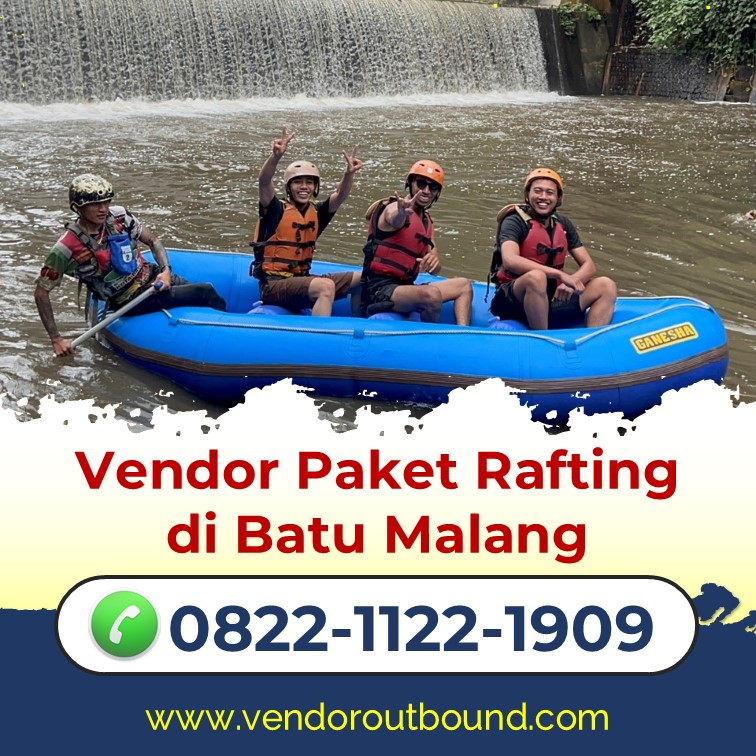
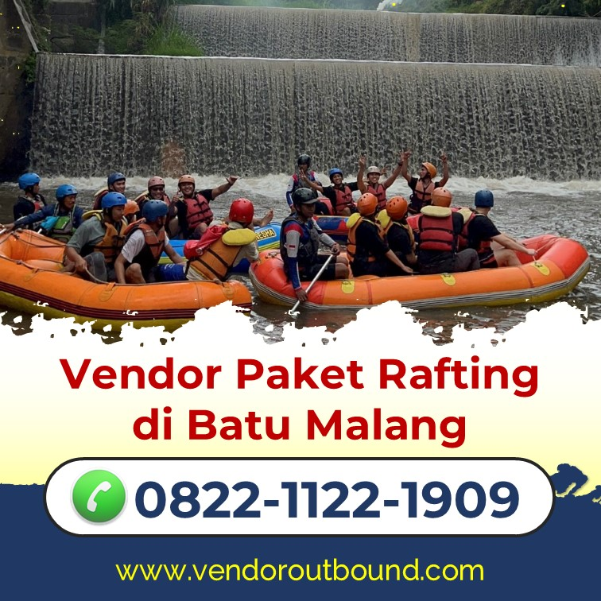

Panduan Lengkap Arung Jeram untuk Pemula
Persiapan, perlengkapan, teknik dasar, dan tips keselamatan untuk pemula.
Baca SelengkapnyaIndonesia adalah surga arung jeram dunia! Dengan lebih dari 5.000 sungai yang mengalir di 17.000 pulau, negeri ini menyimpan destinasi rafting kelas dunia yang tersebar dari Sabang sampai Merauke. Pelajari panduan lengkapnya di sini!

Indonesia memiliki lokasi arung jeram yang tersebar di hampir setiap pulau besar. Berikut ringkasan distribusi destinasi utama:
Jawa (25+ lokasi) | Sumatera (15+ lokasi) | Bali (8+ lokasi) | Kalimantan (10+ lokasi) | Sulawesi (12+ lokasi) | Papua (20+ lokasi belum tereksplor)

Sungai Progo adalah destinasi rafting paling ikonik di Yogyakarta. Mengalir dari lereng Gunung Merapi, airnya jernih kehijauan dengan pemandangan bukit hijau yang dramatis. Tersedia rute 9 km (pemula) dan 22 km (advanced).

Sungai Elo mengalir di kaki Gunung Merapi dan Merbabu. Pemandangannya memukau dengan latar belakang pegunungan dan hutan tropis yang rimbun. Grade II-III membuatnya sempurna untuk keluarga dan wisatawan seni budaya yang ingin kombinasi petualangan.
"Indonesia memiliki beberapa sungai rafting terbaik di Asia Tenggara. Keanekaragaman jeramnya — dari yang cocok untuk pemula hingga kelas dunia — menjadikan Indonesia destinasi arung jeram yang lengkap."
— International Rafting Federation (IRF) Regional Asia Report 2025

Sungai Alas di Taman Nasional Gunung Leuser adalah salah satu sungai arung jeram terbaik di dunia. Mengalir 120 km melalui hutan tropis yang masih perawan, dengan kemungkinan berjumpa orangutan, gajah, dan harimau Sumatera liar!

Sungai Ayung di Ubud adalah destinasi rafting paling terkenal di Bali — dan mungkin Indonesia! Mengalir di antara tebing hijau dengan ukiran batu, sawah terasering, dan air terjun kecil yang mengalir dari dinding cadas. Pengalaman rafting sekaligus wisata budaya Bali yang tak terlupakan.

Sungai Kahayan menawarkan pengalaman ekspedisi yang intens di jantung Borneo. Anda akan mengarungi sungai melalui hutan hujan tropis yang masih perawan, dan kemungkinan besar berjumpa dengan bekantan, beruang madu, dan burung rangkong.

Waktu terbaik bervariasi tergantung lokasi dan musim. Namun secara umum:
Waktu terbaik untuk pemula — debit air lebih stabil, cuaca lebih dapat diprediksi, dan jarak pandang lebih baik. Namun jeram bisa lebih dangkal di beberapa lokasi.
Jeram lebih deras dan menantang — ideal untuk yang berpengalaman. Debit air tinggi menciptakan rapid yang lebih intens. Namun perlu kewaspadaan ekstra terhadap banjir bandang.
Tentu saja! Indonesia adalah destinasi arung jeram internasional yang sudah diakui. Banyak operator yang memiliki guide dan materi safety briefing dalam bahasa Inggris. Destinasi seperti Ayung (Bali) dan Citarik (Sukabumi) sangat ramah wisatawan mancanegara.
Tergantung pilihan paket. Paket half-day (4–5 jam total termasuk perjalanan dan persiapan), full-day (8–10 jam), atau multi-day expedition (2–7 hari untuk lokasi terpencil di Sumatera atau Kalimantan).
Tidak ada visa khusus. Wisatawan asing menggunakan visa turis biasa (Visa on Arrival atau visa elektronik) yang berlaku untuk semua aktivitas wisata termasuk arung jeram.
Untuk pengalaman pertama yang menyenangkan sekaligus aman, kami merekomendasikan Sungai Ayung (Bali) untuk wisatawan asing, atau Sungai Elo (Magelang) / Citarik (Sukabumi) untuk wisatawan domestik. Ketiganya menawarkan pengalaman yang berkesan tanpa risiko berlebihan.
Indonesia adalah salah satu destinasi arung jeram terbaik di dunia. Dari jeram yang ramah pemula di Bali dan Jawa, hingga ekspedisi liar di Sumatera dan Kalimantan — setiap level petualang punya tempatnya di sini.
Apapun pilihan Anda, pastikan selalu: operator bersertifikat, perlengkapan safety lengkap, dan sesuaikan level jeram dengan pengalaman Anda. Petualangan terbaik Papua dan Kalimantan menanti!
Kami membantu Anda merencanakan trip arung jeram ke destinasi terbaik Indonesia. Konsultasi gratis dengan pakar kami sekarang!
Konsultasi Trip Gratis